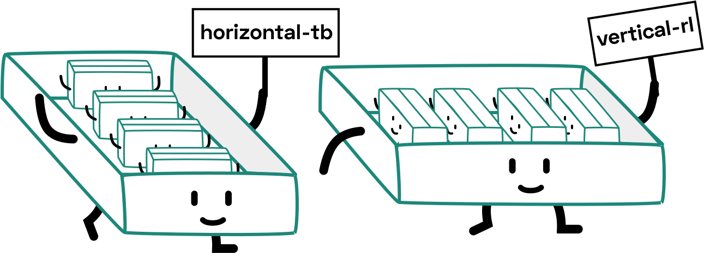

Interesting things I learnt about layout
(and general CSS…)


🥑 Developer Advocate 🥑

🇸🇬 SingaporeCSS 🇸🇬
Initial value of display for all elements is inline
Then how come <div>s, paragraphs, lists and the like are <display: block>?
Because browser default stylesheets.
- Firefox stylesheet:
resource://gre-resources/html.css - Link to Chromium stylesheet
Inline-level element behaviour
inline,inline-table,inline-table,inline-flex,inline-gridwidthandheightproperty does not apply- height of content is based on font size
vertical-alignproperty only applies to inline-level and table-cell elements- Only margins, borders and paddings along the inline axis have any visible effect on an inline box
If an element generates zero boxes, was it really there at all?
If an element generates zero boxes, was it really there at all?
Block formatting contexts
The context that block-level boxes participate in
Boxes are laid out one after another, in the block flow direction, from the start of the containing block
Margins along the block flow direction between adjacent block-level boxes in the same block formatting context collapse
What establishes new block formatting contexts?
- Floats
- Absolutely positioned elements
- Block containers that are not block boxes
- Block boxes with
overflowother thanvisible - Boxes with
displayset toflow-root
We need a new BFC because...?
1. Prevent collapsing margins
This is a line of text in a p tag.
I'm a box with margins.
I'm another box with margins.
This is a line of text in a p tag.
2. Stop text from flowing around the float
I'm a floated box!
This is just a bunch of text that is going on and on so it's long enough to wrap around the float, line boxes yo!
This is just a bunch of text that is going on and on so it's long enough to wrap around the float, line boxes yo!
3. Contains floats
Floaty! ^_^
Floaty too! :)
Floaty! ^_^
Floaty too! :)
Let's talk about margin collapsing
1. Between adjacent siblings
2. Between empty boxes
3. Parent and first / last child element
This is the parent element
We can stop margins from collapsing by…?
1. Add something in between the elements
2. Add border to the parent element
This is the parent element
3. Create a new BFC
Refer to section on block formatting contexts ☝️
🤓 Everything You Need To Know About CSS Margins 🤓
https://www.smashingmagazine.com/2019/07/margins-in-css/
Grid gaps
May cause overflow if you're not careful
Flexbox and padding
padding at flex end side of overflow scroll container not applied
Use the flex shorthand
Authors are encouraged to control flexibility using the flex shorthand rather than with its longhand properties directly, as the shorthand correctly resets any unspecified components to accommodate common uses.
About shorthands…
The border shorthand
- Sets the same width, colour and style for all four borders of a box
- Unlike
marginandpaddingshorthands, it cannot set different values on the four borders - Also resets
border-imageto initial value
It is therefore recommended that authors use the border shorthand, rather than other shorthands or the individual properties, to override any border settings earlier in the cascade.
The background shorthand
<bg-layer>#, <final-bg-layer>
where
<bg-layer> = <bg-image> || <bg-position> [ / <bg-size> ]? || <repeat-style> || <attachment> || <box> || <box>
<final-bg-layer> = <'background-color'> || <bg-image> || <bg-position> [ / <bg-size> ]? || <repeat-style> || <attachment> || <box> || <box>
- at least 1 value must occur, the rest is pretty much up to you
- for
<position>, can optionally include<bg-size> - entire set for
<bg-layer>can occur multiple times, comma-separated - only
<final-bg-layer>can have<'background-color'>
Given a valid declaration, for each layer the shorthand first sets the corresponding layer of each of
background-image,background-position,background-size,background-repeat,background-origin,background-clipandbackground-attachmentto that property’s initial value, then assigns any explicit values specified for this layer in the declaration. Finallybackground-coloris set to the specified color, if any, else set to its initial value.
The animation shorthand
<single-animation>#
where
<single-animation> = <time> || <easing-function> || <time> || <single-animation-iteration-count> || <single-animation-direction> || <single-animation-fill-mode> || <single-animation-play-state> || [ none | <keyframes-name> ]
Segue: reading CSS specifications
CSS property syntax
Loosely based on the Backus-Naur Form (BNF) notation
A sandwich consists of a lower slice of bread, mustard or mayonnaise; optional lettuce, an optional slice of tomato; two to four slices of either bologna, salami, or ham (in any combination); one or more slices of cheese, and a top slice of bread.
sandwich ::= lower_slice [ mustard | mayonnaise ] lettuce? tomato? [ bologna | salami | ham ]{2,4} cheese+ top_slice
Analogy from How to Read W3C Specs.
Thank you!


Header font is Biorhyme by Aoife Mooney
Body font is Cabin by Pablo Impallari